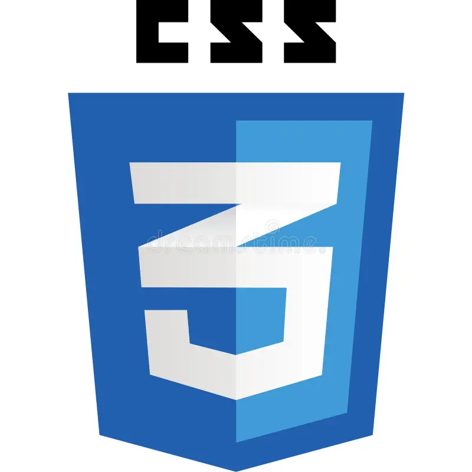

Educação Sem Fronteiras: Conectando Você ao Conhecimento do Futuro
Em um mundo em constante transformação, a educação não pode ser limitada. Nossa plataforma nasceu com o propósito de ser um hub completo de aprendizado, oferecendo as ferramentas necessárias para quem deseja dominar novas habilidades, seja na tecnologia, nos negócios ou em áreas criativas. Aqui, o conhecimento é visto de forma holística, preparando você para os desafios de um mercado global.
Ver mais
LISTA DE CURSOS

Curso de HTML Básico
O alicerce da sua carreira web.
Se inscrever: Você entra no curso para entender como a web funciona "por baixo do capô" e aprende a configurar seu ambiente de desenvolvimento.
Assistir aulas: Aprende sobre as tags fundamentais, como criar títulos, parágrafos, listas e como estruturar um documento de forma semântica.
Fazer exercícios: O desafio prático será criar sua primeira página estática, organizando um artigo com imagens e links que funcionam.
Receber certificado: Valida que você sabe construir a estrutura de qualquer site de forma organizada e acessível.

Curso de CSS
Onde o design ganha vida.
Se inscrever: O foco aqui muda para a estética. Você se prepara para aprender sobre cores, fontes e posicionamento.
Assistir aulas: Estuda o sistema de cores, como usar o Box Model, o poder do Flexbox e como deixar o site bonito em celulares (responsividade).
Fazer exercícios: Você pegará aquela página de HTML simples que criou antes e a transformará em um site moderno, com cores vibrantes e um layout elegante.
Receber certificado: Comprova sua habilidade de transformar rascunhos em interfaces visuais atraentes e profissionais.

Curso de JavaScript
Dando inteligência e movimento aos seus projetos.
Se inscrever: Você começa a jornada na programação real. Prepare-se para exercitar o raciocínio lógico e a resolução de problemas.
Assistir aulas:Aprende sobre variáveis, funções, condições e como o JavaScript pode "conversar" com o HTML para alterar coisas na tela em tempo real.
Fazer exercícios: Você criará componentes interativos, como um botão que muda a cor da página, um formulário que valida dados ou um contador digital.
Receber certificado: Este é o selo de que você não apenas faz sites "bonitos", mas cria aplicações web funcionais e inteligentes.